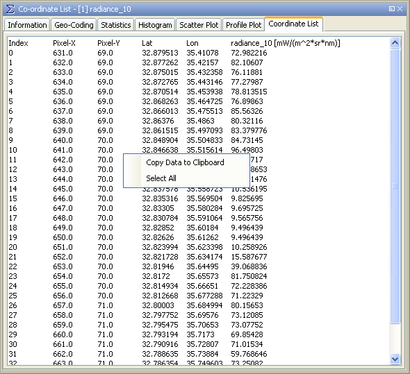

| Table View | |
A table view can be accessed from the Correlative Plot or the Profile Plot.
It refers to the data used to create the according plot and the selected band.
You can switch back to the chart view by clicking the chart icon in the upper right.
The screenshot below shows the table view for a correlative plot.

Note the following rules: For the correlative plot, only those pixels which contain points are considered. For the profile plot, also pixels between pixels containing vector points are considered (you can disable this by deselecting 'Compute in-between points' in the chart view). Incoming reference data are marked with the suffix "_ref" which means reference data.
In detail, the view lists:
A mouse right-click within the table brings up a context menu with the item Copy data to clipboard. This will copy the diagram data as tabulated text to the system clipboard. The copied text can then be pasted directly into a spreadsheet application (e.g. Microsoft® Excel).